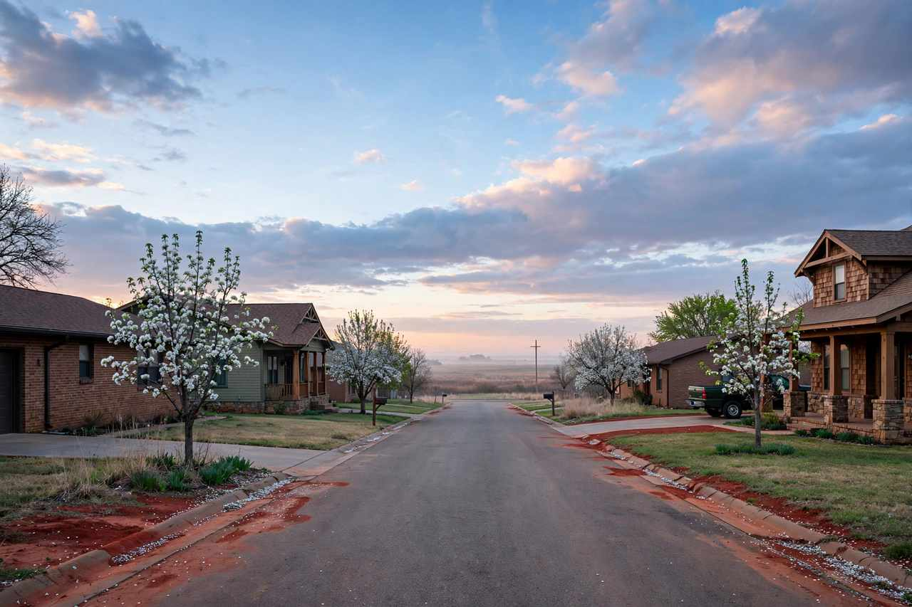

Rodent Control · Arkoma, OK
Fast Rodent Control in Arkoma, OK
If rodents have moved into your Arkoma home or business, Murvo can help today. Our local, licensed crews provide same-day inspection, targeted removal, durable exclusion, and cleanup, all under one flat-rate written quote with a written guarantee. No hourly billing and no surprise add-ons, just rodent specialists serving Arkoma and communities throughout Le Flore County every day of the week. Service covers 1 ZIP codes across Le Flore County, including 74901, with same-day appointments where schedules allow.
24/7Availability
1ZIP codes covered
Same-dayResponse
Licensed · Upfront options · Written guarantees · Fully insured
Arkoma at a glance
Local Rodent Control for Arkoma, OK.
Le Flore County
Countyeastern Oklahoma
RegionBroken Arrow · 89 mi
Nearest metro173 miles east of Oklahoma City
From Oklahoma City1
ZIP codes covered Service by service in Arkoma
Rodent Control Services Available in Arkoma
Thirty rodent services, one local standard in Arkoma: inspection-led, exclusion-first, and quoted in writing before work begins. Browse the full list for Le Flore County below - each section explains what the service involves here, what it typically costs nationally, and how fast we can start.
- 01Rodent Control↗
- 02Rodent Inspection↗
- 03Rodent Removal↗
- 04Rodent Exclusion↗
- 05Rodent Proofing↗
- 06Rat Control↗
- 07Mice Control↗
- 08Mouse Removal↗
- 09Rat Removal↗
- 10Rodent Trapping↗
- 11Rodent Baiting↗
- 12Rodenticide Application↗
- 13Attic Rodent Removal↗
- 14Crawl Space Rodent Removal↗
- 15Wall Rodent Removal↗
- 16Kitchen Rodent Control↗
- 17Garage Rodent Control↗
- 18Commercial Rodent Control↗
- 19Residential Rodent Control↗
- 20Emergency Rodent Removal↗
- 21Same-Day Rodent Control↗
- 22Rodent Damage Repair↗
- 23Rodent Waste Cleanup↗
- 24Rodent Disinfection↗
- 25Rodent Odor Removal↗
- 26Dead Rodent Removal↗
- 27Rodent Dropping Cleanup↗
- 28Rodent Exclusion for Roofs↗
- 29Rodent Exclusion for Vents↗
- 30Rodent Exclusion for Chimneys↗
Rodent Control in Arkoma
Rodent Control in Arkoma
In ranch and suburban single-family homes, older bungalows, and new-build subdivisions, rodents rarely use the front door. They follow rooflines and attic vents, garage door seals, weep holes, and foundation cracks opened by shifting clay soil, settle where it stays warm, and expand from there across Le Flore County homes. Our rodent control pairs careful identification of Roof rat (Rattus rattus) and Norway rat (Rattus norvegicus) with trapping, sealing, and monitoring, handled by licensed and insured technicians who document each stage for you.
In Arkoma, rodent control is not a generic spray-and-go service. Rodents exploit rooflines and attic vents, garage door seals, weep holes, and foundation cracks opened by shifting clay soil in ranch and suburban single-family homes, older bungalows, and new-build subdivisions, and a fix that ignores those routes does not last. Murvo's Arkoma team inspects first, shows you the evidence - droppings, gnaw marks, entry gaps - and then lays out the work with a flat-rate written quote. We serve all of Le Flore County from Arkoma, including Moffett, Pocola, and every job is covered by our written workmanship guarantee. Around Rock Island, Moffett, Pocola, the pattern is similar: Norway rat (Rattus norvegicus) finds rooflines and attic vents, garage door seals, weep holes, and foundation cracks opened by shifting clay soil first, and lasting rodent control has to close those routes.
We start by identifying whether Roof rat (Rattus rattus), Norway rat (Rattus norvegicus), or both are active, because each species nests, feeds, and travels differently. Nothing is sealed while animals remain inside. Traps are placed on proven runways along walls, beams, and pipe runs, checked on schedule, and adjusted as catches change. Once numbers fall, exclusion sealing closes the route back in, droppings and nesting debris are removed hygienically, and follow-up monitoring checks the attic, crawl space, and kitchen until readings stay clear. That order protects your home.
Booking takes one call, and same-day appointments are available in most Arkoma areas. Your technician inspects first, talks you through the plan in plain language, and only starts once you approve the written quote. Work is carried out in stages, with trap checks and sealing visits booked ahead. At the final visit we walk the finished work together and confirm monitoring is clear. Questions are answered at every stage, day or night.
In most of Arkoma, we can offer a same-day appointment for rodent control, and our lines are open 24/7 for urgent cases like scratching in the walls or a rodent in a living area. Your technician inspects first, explains the plan, and quotes a flat rate in writing before any work begins, so help starts fast without surprises. Murvo's Arkoma crews explain the finding either way, and the flat-rate quote leaves the decision with you.
Murvo does not quote rodent control sight unseen, because species, activity, and sealing needs change the work involved. After inspection you get one flat-rate written quote, and that is the figure you pay. As national context only, Angi's 2026 figures put rat and mouse removal and control at an average of $396, with a typical range of $189 to $655 — a benchmark, not a Murvo price.
Rodent Inspection in Arkoma
Rodent Inspection in Arkoma
What should you expect to hold afterwards? Photographs, a species identification, a map of entry points, and priorities you can act on in stages. That is a Murvo rodent inspection in Arkoma: licensed and insured, unhurried, and honest about separating urgent problems from minor weaknesses that can safely wait.
When you need rodent inspection in Arkoma, the job starts with what is actually happening in your part of Le Flore County. Murvo crews work Arkoma every week, so they know how Roof rat (Rattus rattus) and Norway rat (Rattus norvegicus) behave around ranch and suburban single-family homes, older bungalows, and new-build subdivisions here - and where they get in: rooflines and attic vents, garage door seals, weep holes, and foundation cracks opened by shifting clay soil. We arrive equipped for the full job, confirm the flat rate in writing before work begins, and cover the whole Arkoma area, including Moffett, Pocola. No call-center runaround and no open-ended hourly billing - just a local crew, a clear plan, and a written quote you approve first. In Arkoma, rodent inspection calls most often involve ranch and suburban single-family homes, older bungalows, and new-build subdivisions, where rooflines and attic vents, garage door seals, weep holes, and foundation cracks opened by shifting clay soil decide whether the fix holds.
Timing often tells the story first. Technicians use what you report to focus the search, then verify it against physical evidence throughout ranch and suburban single-family homes, older bungalows, and new-build subdivisions. They check wiring and insulation for damage, test whether gaps at rooflines and attic vents, garage door seals, weep holes, and foundation cracks opened by shifting clay soil are active, and mark each opening by size and species. The written report that follows ranks repairs clearly, so decisions rest on findings rather than guesswork or pressure. Noises at dusk suggest one pattern; droppings near stored food suggest another. Each recommendation in that report traces back to a photographed finding, keeping the whole assessment accountable.
Your part is simple: point out noises, droppings, and any past problems. Ours is everything else. A background-checked technician arrives on time, protects access areas, and inspects inside and out against a set checklist. Before leaving, you walk through the evidence together, discuss priorities, and decide what happens next, with no obligation attached. If you decide to proceed, those findings become the working plan, so no second survey is needed before approved repairs begin.
You do not have to wait days for answers in Arkoma. Same-day rodent inspection appointments are available in most areas, urgent calls are taken 24/7, and most home inspections take under an hour. You finish the visit with photos, written findings, and flat-rate pricing for anything we recommend. An Arkoma inspection confirms it on site - dropping size, gnaw marks, and entry points tell the story quickly.
Your exact rodent inspection price is confirmed before we visit, and any follow-up work is quoted as a flat rate in writing after the inspection — no hourly billing. For context, Angi's 2026 data puts a professional rodent inspection nationally at $100 to $200, often credited toward the job if you proceed.
Rodent Removal in Arkoma
Rodent Removal in Arkoma
Most Arkoma removal calls start after a homeowner has already tried a store-bought trap and caught nothing. The difference is placement and persistence. Murvo locates nests first, sets traps on confirmed routes for Roof rat (Rattus rattus) and Norway rat (Rattus norvegicus), returns until catches end, and quotes the whole program as one flat-rate written quote.
In Arkoma, rodent removal is not a generic spray-and-go service. Rodents exploit rooflines and attic vents, garage door seals, weep holes, and foundation cracks opened by shifting clay soil in ranch and suburban single-family homes, older bungalows, and new-build subdivisions, and a fix that ignores those routes does not last. Murvo's Arkoma team inspects first, shows you the evidence - droppings, gnaw marks, entry gaps - and then lays out the work with a flat-rate written quote. We serve all of Le Flore County from Arkoma, including Moffett, Pocola, and every job is covered by our written workmanship guarantee. The Arkoma crews who handle rodent removal also handle the follow-through - proofing, cleanup, and monitoring - so one visit can close the whole problem.
Removal here is measured in records, not impressions. Each trap is numbered, mapped, and checked on schedule, and every catch is logged against its location. That log shows where activity concentrates, where it is fading, and where a placement needs to move. When the log stays empty across repeat checks, removal is genuinely finished. Sealing recommendations follow immediately, because a clear home with open gaps will not stay clear for long in Arkoma. That record also protects you, because it shows exactly when activity ended rather than when visits simply stopped.
Call, describe the signs, and we will set a visit window, often for the same day. With approval, traps go in immediately. Return visits are already booked, so clearing, resetting, and progress updates happen without you chasing anyone for news. The first appointment confirms species and numbers, explains the trapping sequence, and produces your written quote. Photographs and catch records are shared as the program runs, giving you visible proof of progress rather than a verbal summary at the end.
When rodents are active indoors in Arkoma, waiting rarely helps. Rodent removal can usually start the same day you call, our line answers 24/7 for a rodent loose in a living area, and the first visit sets traps straight away. Scheduled returns then clear and reset them until monitoring shows the home is clear. The written quote for your Arkoma property will spell out exactly which of these applies before any work starts.
Cost depends on the species, how many animals are active, and how much sealing the home needs afterwards, so Murvo inspects first and quotes one flat rate in writing. For national context only, Angi's 2026 data averages rat and mouse removal at $396, typically $189 to $655. That benchmark is not a Murvo price; your written quote is the exact figure.
Rodent Exclusion in Arkoma
Rodent Exclusion in Arkoma
Rats can pass through a hole the size of a quarter, and mice through one far smaller, which is why ranch and suburban single-family homes, older bungalows, and new-build subdivisions in Arkoma hide so many working entry points around rooflines and attic vents, garage door seals, weep holes, and foundation cracks opened by shifting clay soil. Our technicians inspect soffits, eaves, pipe entries, foundation cracks, and door sweeps in detail, then prioritize the openings that matter most for Roof rat (Rattus rattus) and Norway rat (Rattus norvegicus) locally.
In Arkoma, rodent exclusion is not a generic spray-and-go service. Rodents exploit rooflines and attic vents, garage door seals, weep holes, and foundation cracks opened by shifting clay soil in ranch and suburban single-family homes, older bungalows, and new-build subdivisions, and a fix that ignores those routes does not last. Murvo's Arkoma team inspects first, shows you the evidence - droppings, gnaw marks, entry gaps - and then lays out the work with a flat-rate written quote. We serve all of Le Flore County from Arkoma, including Moffett, Pocola, and every job is covered by our written workmanship guarantee. In Arkoma, rodent exclusion calls most often involve ranch and suburban single-family homes, older bungalows, and new-build subdivisions, where rooflines and attic vents, garage door seals, weep holes, and foundation cracks opened by shifting clay soil decide whether the fix holds.
The sequence matters as much as the materials. Active openings are closed first, inactive weaknesses next, and purely cosmetic gaps last, so protection arrives where pressure is highest. Photographs record every finished seal with its location, building a reference you keep. Because a properly sealed home needs far less ongoing treatment, exclusion also lowers long-term reliance on bait. A later monitoring check tests the work honestly, revisiting each sealed point for fresh rub marks, droppings, or gnawing. The final monitoring visit therefore matters as much as the sealing day itself, and its findings are shared.
Before sealing day, confirm pets are secured and access to the roofline and foundation is clear. Afterwards you receive the photographs, the guarantee, and a date for the follow-up check that confirms everything is holding as intended. The crew then works through the agreed list, checks that no animals remain inside, and fits each seal cleanly. If monitoring ever finds fresh activity at a sealed point, that written inventory tells us exactly what to inspect first.
Rodent exclusion in Arkoma usually starts with a survey visit we can often schedule the same day you call. Sealing itself is booked as soon as any active animals are cleared, because nothing is sealed inside. Most homes are fully sealed within days, not weeks, and urgent entry points near wiring or food areas are prioritized first. In Le Flore County, most cases involve the Roof rat (Rattus rattus) and the Norway rat (Rattus norvegicus), so the inspection focuses on their routes first.
After the survey of your Arkoma home, every opening that needs sealing is listed and priced as one flat-rate written quote, so you pay only for the work your property needs. For national context, Angi's 2026 data puts basic exclusion at $200 to $600 depending on access and the number of openings; that benchmark is not a Murvo price.
Rodent Proofing in Arkoma
Rodent Proofing in Arkoma
When is the right season for rodent proofing in Arkoma? Before cold weather sends rodents searching for indoor warmth, though any quiet month works well. Our licensed, insured technicians harden the structure, advise on food storage and vegetation, and leave a seasonal re-check booked, all backed by a written workmanship guarantee.
In Arkoma, rodent proofing is not a generic spray-and-go service. Rodents exploit rooflines and attic vents, garage door seals, weep holes, and foundation cracks opened by shifting clay soil in ranch and suburban single-family homes, older bungalows, and new-build subdivisions, and a fix that ignores those routes does not last. Murvo's Arkoma team inspects first, shows you the evidence - droppings, gnaw marks, entry gaps - and then lays out the work with a flat-rate written quote. We serve all of Le Flore County from Arkoma, including Moffett, Pocola, and every job is covered by our written workmanship guarantee. In Arkoma, rodent proofing calls most often involve ranch and suburban single-family homes, older bungalows, and new-build subdivisions, where rooflines and attic vents, garage door seals, weep holes, and foundation cracks opened by shifting clay soil decide whether the fix holds.
Proofing divides naturally into structure, surroundings, and habits. Structure means sealing utility entries, screening vents and chimneys, and fitting sweeps where doors leak light. Surroundings means trimming branches back from the roofline, moving clutter and timber away from walls, and reducing sheltered harborage. Habits means securing pet food, bird seed, and stored produce so the property stops advertising itself. Technicians assess all three layers in one survey and rank the combined findings by impact, not by what is easiest to sell.
Book a rodent proofing survey in Arkoma and we will arrange a visit time that suits your household, often the same day. Approved sealing is completed cleanly, then a seasonal re-check is scheduled. Your technician walks the property with you, photographs weak points, and explains the plan in plain language. You receive a flat-rate written quote separating essential from optional work. The finished work is fully guaranteed in writing by Murvo.
Rodent proofing is preventive, so there is rarely a rush, but surveys in Arkoma can often be arranged the same day you call, and always within a few days. Most proofing work is completed in a single visit once you approve the plan, and booking before colder weather gives your home protection ahead of the seasonal rush indoors. An Arkoma inspection confirms it on site - dropping size, gnaw marks, and entry points tell the story quickly.
We survey your Arkoma property first, separate the quick wins you can handle yourself from the specialist sealing, and quote the professional work as one flat rate in writing so spending can be staged. Angi's 2026 national context puts exclusion, the core of proofing, at $200 to $600 for basic work — a benchmark only, not a Murvo price.
Rat Control in Arkoma
Rat Control in Arkoma
What separates control from a temporary lull? Monitoring that continues after the last catch. Murvo keeps checking until routes stay quiet, removes trapped rats hygienically, and finishes with exclusion so replacements cannot follow the same path. Licensed, insured technicians document every visit, and urgent calls are answered 24/7.
In Arkoma, rat control is not a generic spray-and-go service. Rodents exploit rooflines and attic vents, garage door seals, weep holes, and foundation cracks opened by shifting clay soil in ranch and suburban single-family homes, older bungalows, and new-build subdivisions, and a fix that ignores those routes does not last. Murvo's Arkoma team inspects first, shows you the evidence - droppings, gnaw marks, entry gaps - and then lays out the work with a flat-rate written quote. We serve all of Le Flore County from Arkoma, including Moffett, Pocola, and every job is covered by our written workmanship guarantee. The Arkoma crews who handle rat control also handle the follow-through - proofing, cleanup, and monitoring - so one visit can close the whole problem.
Wary rats punish rushed trapping, so the program begins with patience. Only then are traps set, checked frequently, and repositioned as the pattern shifts. Catches are recorded by location, giving a clear picture of colony size and movement. Exclusion follows at rooflines and entry points, and monitoring devices remain in place afterwards to verify that quiet routes have genuinely stayed quiet. Unset traps are placed on confirmed runways and pre-baited until feeding becomes confident and regular. Counts matter here, because a falling catch trend tells a different story from a single lucky night.
Call for rat control in Arkoma and we will book an inspection, often the same day for active problems. Your technician maps routes and harborage, explains the trapping plan, and gives you a flat-rate written quote before any work begins. Trapping visits then run on a set schedule, with placements adjusted as activity shifts. The job closes only when monitoring confirms rats are gone and exclusion is complete. Your guarantee is confirmed in writing.
Rats do not wait, and neither do we: rat control in Arkoma can usually start with a same-day inspection, and urgent calls are answered 24/7. Pre-baiting begins on the first visit once you approve the written quote, traps are set as soon as rats are feeding confidently, and scheduled checks keep the program moving until activity stops. Around Arkoma, ranch and suburban single-family homes, older bungalows, and new-build subdivisions give rodents the most cover, which is why entry points get checked before traps are set.
Rat work varies with species, colony size, and how many entry points need sealing, so Murvo inspects first and quotes one flat rate in writing. For national context only, Angi's 2026 data averages rat control and removal at $396, typically $189 to $655. That benchmark is not a Murvo price; the written quote for your Arkoma home is the exact figure you pay.
Mice Control in Arkoma
Mice Control in Arkoma
How many mice does one sighting usually mean? More than one, and the colony grows while treatment waits. Murvo builds mice control around trapping and sealing rather than bait, uses licensed, insured technicians, and confirms the result with follow-up monitoring, so a quiet week is verified instead of simply hoped for.
When you need mice control in Arkoma, the job starts with what is actually happening in your part of Le Flore County. Murvo crews work Arkoma every week, so they know how Roof rat (Rattus rattus) and Norway rat (Rattus norvegicus) behave around ranch and suburban single-family homes, older bungalows, and new-build subdivisions here - and where they get in: rooflines and attic vents, garage door seals, weep holes, and foundation cracks opened by shifting clay soil. We arrive equipped for the full job, confirm the flat rate in writing before work begins, and cover the whole Arkoma area, including Moffett, Pocola. No call-center runaround and no open-ended hourly billing - just a local crew, a clear plan, and a written quote you approve first. Coverage for mice control spans 1 ZIP codes in Le Flore County, including 74901.
Mice travel short, familiar routes, hugging walls and rarely crossing open floors. Sealing then closes pencil-width gaps behind baseboards, around radiator pipes, and at service entries, while scent-marked surfaces are cleaned so new mice find no welcoming trail. Control exploits that habit: traps are clustered along baseboards, behind appliances, and inside attic voids where droppings concentrate, rather than scattered hopefully around rooms. Technicians clear and reset on schedule, tracking numbers visit by visit until they reach zero. That is why placements stay fixed between checks unless evidence, rather than impatience, gives a reason to move them.
Book with one call and tell us which rooms show signs; same-day surveys are often possible. Your technician inspects kitchen, attic, and voids, explains the route map, and quotes in writing before traps are set. Check visits are scheduled immediately, and each one reports catches plainly until the final confirmation visit shows activity has stopped. The final confirmation matters, because mice can go quiet briefly while a nest remains, and monitoring distinguishes quiet from genuinely finished.
Mice multiply fast, so mice control in Arkoma is built to start fast too: a survey can often be arranged the same day you call, with traps set on that first visit once the quote is approved. Because mice investigate new objects quickly, catches usually begin soon after, and check visits follow until a final confirmation shows activity has stopped. In Le Flore County, activity follows the local season, so timing the work matters as much as the method.
The number of rooms affected and the amount of sealing required set the price, so Murvo surveys first and quotes one flat rate in writing. For national context only, Angi's 2026 data averages rat and mouse control and removal at $396, typically $189 to $655 — not a Murvo price; your written quote is exact.
Mouse Removal in Arkoma
Mouse Removal in Arkoma
You found droppings in a cabinet or heard scratching in the attic of your Arkoma home, and you want the mice out, not managed indefinitely. Murvo's mouse removal locates nests and feeding areas room by room, runs a multi-trap program until catches reach zero, and seals access points behind it. One flat-rate written quote is agreed before work begins.
In Arkoma, mouse removal is not a generic spray-and-go service. Rodents exploit rooflines and attic vents, garage door seals, weep holes, and foundation cracks opened by shifting clay soil in ranch and suburban single-family homes, older bungalows, and new-build subdivisions, and a fix that ignores those routes does not last. Murvo's Arkoma team inspects first, shows you the evidence - droppings, gnaw marks, entry gaps - and then lays out the work with a flat-rate written quote. We serve all of Le Flore County from Arkoma, including Moffett, Pocola, and every job is covered by our written workmanship guarantee. Homes near Rock Island tend to show activity first in Arkoma, which is why inspections start with rooflines and attic vents, garage door seals, weep holes, and foundation cracks opened by shifting clay soil.
The survey comes first, and it is deliberately thorough. Lofts, under-floor voids, cabinets, and the spaces behind kitchen units are checked for nests, droppings, and stored food caches. Traps are then set in multiples at proven points, because a single trap rarely reflects colony size. Returns are scheduled tightly: catches are cleared, traps reset, and numbers tracked until they fall to zero and stay there across a confirming check before sealing begins. Photographs of nesting sites help here, because they reveal how far activity had spread before trapping began.
As catches fall, the focus shifts in order: final clearing, disinfection of affected areas, then sealing of access points. Seasonal proofing can be arranged if your property has repeated fall problems. Your technician reviews the catch record with you at sign-off, confirms which rooms are fully safe to use, and leaves prevention advice plus guarantee paperwork. If signs reappear during monitoring, placements are restored under the same agreed program rather than starting a new conversation from scratch.
For mice active in kitchens or living areas of your Arkoma home, mouse removal can often begin the same day you call. That first visit surveys nesting sites and sets traps as soon as you approve the quote, and because mice investigate traps quickly, catches usually start fast. Return visits continue until numbers reach zero. Around Arkoma, ranch and suburban single-family homes, older bungalows, and new-build subdivisions give rodents the most cover, which is why entry points get checked before traps are set.
Mouse removal cost reflects the number of rooms involved and how much sealing is needed, which is why Murvo surveys first and quotes a flat rate in writing. For national context only, Angi's 2026 data averages rat and mouse removal at $396, typically $189 to $655. That benchmark is not a Murvo price; your written quote covers your exact program.
Rat Removal in Arkoma
Rat Removal in Arkoma
Roof rats and Norway rats behave and enter very differently, and in Arkoma the distinction decides where traps go and which gaps get sealed. ranch and suburban single-family homes, older bungalows, and new-build subdivisions reached through rooflines and attic vents, garage door seals, weep holes, and foundation cracks opened by shifting clay soil can hide attic colonies or basement harborage for months. Our licensed, background-checked technicians trace the full route, remove the colony, and sanitize contaminated areas where nests were found.
When you need rat removal in Arkoma, the job starts with what is actually happening in your part of Le Flore County. Murvo crews work Arkoma every week, so they know how Roof rat (Rattus rattus) and Norway rat (Rattus norvegicus) behave around ranch and suburban single-family homes, older bungalows, and new-build subdivisions here - and where they get in: rooflines and attic vents, garage door seals, weep holes, and foundation cracks opened by shifting clay soil. We arrive equipped for the full job, confirm the flat rate in writing before work begins, and cover the whole Arkoma area, including Moffett, Pocola. No call-center runaround and no open-ended hourly billing - just a local crew, a clear plan, and a written quote you approve first. Around Rock Island, Moffett, Pocola, the pattern is similar: Norway rat (Rattus norvegicus) finds rooflines and attic vents, garage door seals, weep holes, and foundation cracks opened by shifting clay soil first, and lasting rat removal has to close those routes.
Removal stays trap-led and exclusion-backed throughout. Monitoring devices and a documented final walkthrough then prove activity has ended, and proofing advice covers drains, vents, and rooflines going forward. Locked bait stations appear only where a site genuinely justifies them, positioned away from pets and food, labeled, and monitored on schedule; loose bait is never used. After clearance, contaminated areas are sanitized carefully, with surfaces disinfected before cleaning and droppings never dry-swept. That written evidence stays with you, including the monitoring readings that supported the decision to sign off.
Book rat removal in Arkoma and we will agree a visit time, with same-day appointments available for active infestations. At the end, monitoring and a walkthrough confirm clearance, backed by our written workmanship guarantee. Your technician assesses species and colony size, explains the program, and confirms a flat-rate written quote before trapping starts. Repeat visits are scheduled ahead to remove animals and adjust traps. You see documented evidence of the result.
In Arkoma, rat removal can usually start the same day you call, with 24/7 answering for rats active in living areas. Pre-baiting begins on the first visit after you approve the written quote, and traps are set once rats feed confidently, typically within days. Repeat visits then run frequently until monitoring confirms the colony is gone. That is also why Murvo pairs removal with exclusion in Arkoma - treating the animal without closing rooflines and attic vents, garage door seals, weep holes, and foundation cracks opened by shifting clay soil rarely lasts.
Rat removal pricing depends on colony size, access, and the sealing needed afterwards, so Murvo assesses your property first and quotes a flat rate in writing. For national context only, Angi's 2026 data averages rat removal at $396, typically $189 to $655. That is a benchmark, not a Murvo price, and your written quote covers the full program described.
Rodent Trapping in Arkoma
Rodent Trapping in Arkoma
In ranch and suburban single-family homes, older bungalows, and new-build subdivisions, species behavior drives every choice. Wary Roof rats (Rattus rattus) need days of pre-baiting before unset traps can be armed, while Norway rats (Rattus norvegicus) investigate clustered traps quickly near rooflines and attic vents, garage door seals, weep holes, and foundation cracks opened by shifting clay soil routes across Le Flore County. Our technicians match device, bait, and position to that behavior instead of relying on a single generic setup.
When you need rodent trapping in Arkoma, the job starts with what is actually happening in your part of Le Flore County. Murvo crews work Arkoma every week, so they know how Roof rat (Rattus rattus) and Norway rat (Rattus norvegicus) behave around ranch and suburban single-family homes, older bungalows, and new-build subdivisions here - and where they get in: rooflines and attic vents, garage door seals, weep holes, and foundation cracks opened by shifting clay soil. We arrive equipped for the full job, confirm the flat rate in writing before work begins, and cover the whole Arkoma area, including Moffett, Pocola. No call-center runaround and no open-ended hourly billing - just a local crew, a clear plan, and a written quote you approve first. In Arkoma, rodent trapping calls most often involve ranch and suburban single-family homes, older bungalows, and new-build subdivisions, where rooflines and attic vents, garage door seals, weep holes, and foundation cracks opened by shifting clay soil decide whether the fix holds.
Trap selection covers snap traps for quick, humane dispatch, multi-catch devices for busy mouse routes, and live-capture options where you prefer release away from the home. As catches fall, we recommend exclusion sealing, plus droppings cleanup for affected areas, moving the program from active trapping to monitoring and final sign-off. Baits and lures are matched to species and location, and all devices are positioned with pet and child safety in mind and explained to your household. Every device location is mapped for you.
Book rodent trapping in Arkoma and a technician can often start the same day. Scheduled returns clear and reset traps and share catch records with you. When numbers reach zero, we confirm monitoring is clear and discuss sealing. The first visit inspects, maps activity, and places or pre-baits traps; you approve a flat-rate written quote covering the program including check visits before we proceed. The finished program is guaranteed in writing.
In Arkoma, rodent trapping can usually start the same day you call, with traps placed or pre-baiting begun on the first visit after you approve the quote. Mice often investigate within the first night; wary rats need a few days of pre-baiting before traps are set. Scheduled check visits then keep catches moving until numbers reach zero. The written quote for your Arkoma property will spell out exactly which of these applies before any work starts.
Trapping is usually quoted as part of a complete removal program rather than by the trap, and the price depends on species, activity level, and how many check visits are needed. Murvo inspects first and quotes one flat rate in writing covering the program and its check visits, so there are no per-visit surprises and no hourly billing at any stage.
Rodent Baiting in Arkoma
Rodent Baiting in Arkoma
State rules shape how baiting works in Oklahoma: some states restrict anticoagulant rodenticides, and Murvo follows the strictest applicable limits on every job. Before any station is placed at your Arkoma property, a technician maps activity, reviews pet and child concerns with you, and explains exactly what to watch for between monitoring visits. Nothing is placed without that conversation.
In Arkoma, rodent baiting is not a generic spray-and-go service. Rodents exploit rooflines and attic vents, garage door seals, weep holes, and foundation cracks opened by shifting clay soil in ranch and suburban single-family homes, older bungalows, and new-build subdivisions, and a fix that ignores those routes does not last. Murvo's Arkoma team inspects first, shows you the evidence - droppings, gnaw marks, entry gaps - and then lays out the work with a flat-rate written quote. We serve all of Le Flore County from Arkoma, including Moffett, Pocola, and every job is covered by our written workmanship guarantee. The Arkoma crews who handle rodent baiting also handle the follow-through - proofing, cleanup, and monitoring - so one visit can close the whole problem.
Baiting here sits inside a wider sequence, never outside it. Each station is anchored, labeled, and photographed, with its location recorded. Monitoring visits log consumption precisely, and falling consumption, confirmed by other signs, decides when stations are reduced and finally removed altogether. Inspection maps activity and identifies where pressure originates. Exclusion work seals the structure, trapping clears animals already indoors, and only then do locked stations address the outdoor population along fence lines and runways. Those logs become especially important when activity fades, because several quiet checks must agree before stations come out.
Booking starts with a conversation about pets, children, and wildlife on your property, because that shapes placement before we arrive. Approved stations are installed locked and labeled that visit, with monitoring dates booked before we leave. The inspection visit maps activity, agrees each proposed station location with you, and confirms the written quote. Nothing about placement, product type, or monitoring frequency is left vague, and you can ask for the record at any point.
Deliberate setup matters more than speed with rodent baiting, but the first step is still fast: an inspection in Arkoma can often be arranged the same day you call. Stations are placed only after activity is mapped and you approve the written quote and each location, then monitoring runs on a fixed schedule until consumption stops and activity is confirmed clear. Murvo's Arkoma crews explain the finding either way, and the flat-rate quote leaves the decision with you.
How many locked stations your property needs and how long monitoring runs determine the cost, so Murvo inspects and maps activity first, then quotes one flat rate in writing covering placement and scheduled checks. There are no per-visit surprises, and because the approach is exclusion-first, the aim is to reduce and eventually remove stations rather than maintain them forever.
Rodenticide Application in Arkoma
Rodenticide Application in Arkoma
Our approach in Arkoma is exclusion-first: seal entry points, trap active animals, and shrink the need for chemical control quickly. Where rodenticide application is genuinely justified for Roof rat (Rattus rattus) or Norway rat (Rattus norvegicus), a licensed technician maps, labels, and anchors every station, records amounts at each visit, and retrieves dead rodents promptly where accessible to reduce odor and secondary risks.
When you need rodenticide application in Arkoma, the job starts with what is actually happening in your part of Le Flore County. Murvo crews work Arkoma every week, so they know how Roof rat (Rattus rattus) and Norway rat (Rattus norvegicus) behave around ranch and suburban single-family homes, older bungalows, and new-build subdivisions here - and where they get in: rooflines and attic vents, garage door seals, weep holes, and foundation cracks opened by shifting clay soil. We arrive equipped for the full job, confirm the flat rate in writing before work begins, and cover the whole Arkoma area, including Moffett, Pocola. No call-center runaround and no open-ended hourly billing - just a local crew, a clear plan, and a written quote you approve first. Around Rock Island, Moffett, Pocola, the pattern is similar: Norway rat (Rattus norvegicus) finds rooflines and attic vents, garage door seals, weep holes, and foundation cracks opened by shifting clay soil first, and lasting rodenticide application has to close those routes.
The first decision is whether application is justified, and often it is not. Inspection confirms species and activity, then trapping and exclusion are weighed honestly; if those methods can solve the problem safely, they are recommended instead. Where treatment is justified, stations are mapped, anchored, and labeled, products remain inside locked units at all times, and scheduled checks record amounts precisely. Monitoring data then governs whether treatment continues, changes, or stops in favor of proofing alone. If consumption patterns look unusual, technicians investigate rather than simply refilling, because unexpected patterns can signal a different species.
Booking rodenticide application in Arkoma starts with an inspection visit, often available the same day. If you proceed, stations are installed locked and labeled, monitoring visits are scheduled, and treatment continues only while monitoring data supports it, under our written workmanship guarantee. Your licensed technician confirms whether treatment is justified, explains safer alternatives first, and gives you a flat-rate written quote before anything is applied. You can stop the program at any point.
In Arkoma, rodenticide application begins with an inspection we can often schedule the same day you call, because no responsible application happens without one. If treatment is justified and you approve the written quote, locked stations are installed on that visit. Monitoring then runs on schedule, and treatment stops as soon as data shows activity has ended. If you are seeing signs now, an inspection this week is the fastest way to know which situation you are in.
Application cost depends on the number of locked stations, the product required under Oklahoma rules, and how long monitoring runs. Murvo inspects first, explains whether trapping or exclusion could avoid chemical control entirely, and then quotes one flat rate in writing before work begins. The quote covers scheduled monitoring visits, so there are no per-visit surprises later.
Attic Rodent Removal in Arkoma
Attic Rodent Removal in Arkoma
In ranch and suburban single-family homes, older bungalows, and new-build subdivisions, attics reward rodents generously: warm insulation for nesting, quiet during daylight, and access through rooflines and attic vents, garage door seals, weep holes, and foundation cracks opened by shifting clay soil that stays invisible from the ground across Le Flore County. Our technicians photograph nests, droppings, and gnawed cables, check for young, and examine adjoining crawl spaces so connected activity is not left behind.
Homeowners in Arkoma call Murvo for attic rodent removal because the problem here is specific: Roof rat (Rattus rattus) pressure around ranch and suburban single-family homes, older bungalows, and new-build subdivisions, tight access at rooflines and attic vents, garage door seals, weep holes, and foundation cracks opened by shifting clay soil, and activity that follows the local season. Our Le Flore County crews diagnose the real source before recommending work, explain the options in plain language, and quote one flat rate in writing. Across Arkoma - including Moffett, Pocola - every visit is backed by licensed, insured technicians and our written workmanship guarantee. Around Rock Island, Moffett, Pocola, the pattern is similar: Norway rat (Rattus norvegicus) finds rooflines and attic vents, garage door seals, weep holes, and foundation cracks opened by shifting clay soil first, and lasting attic rodent removal has to close those routes.
Cleanup overhead demands care. Poison is avoided in attics deliberately, since animals dying in inaccessible corners create odor and retrieval problems. Adjoining crawl spaces are checked before the job is signed off as complete. Droppings and nesting material are never dry-swept, because that can spread contamination into the air; surfaces are disinfected first, then waste is removed hygienically by technicians in protective equipment. Contaminated insulation is assessed honestly, with repair referrals where replacement is warranted. The result is a documented attic: cleared, sealed, cleaned where needed, and verified quiet before closure.
Book attic rodent removal in Arkoma and we will arrange an attic visit, same-day where chewed wiring or heavy activity makes it urgent. Trapping checks follow on schedule, sealing and cleanup complete the job, and monitoring confirms the attic stays clear under guarantee. Your technician inspects the attic and roofline, shows you photographs of the evidence, and confirms a flat-rate written quote before removal begins. You approve every stage before it happens.
In Arkoma, attic rodent removal visits are often available the same day, and we prioritize attics where chewed wiring creates a fire risk. Trapping starts on the first visit after you approve the written quote, checks run on schedule, and most attics are cleared and sealed within days, with monitoring left briefly to confirm nothing remains inside. Murvo's Arkoma crews explain the finding either way, and the flat-rate quote leaves the decision with you.
Activity levels, roofline sealing, and whether contaminated insulation needs cleanup all affect attic pricing, so Murvo inspects first and quotes one flat rate in writing for the removal program. Cleanup options are priced separately in writing before you decide, so nothing is added once work is underway.
Crawl Space Rodent Removal in Arkoma
Crawl Space Rodent Removal in Arkoma
Under ranch and suburban single-family homes, older bungalows, and new-build subdivisions in Arkoma, crawl spaces give Roof rat (Rattus rattus) and Norway rat (Rattus norvegicus) shelter reached through rooflines and attic vents, garage door seals, weep holes, and foundation cracks opened by shifting clay soil, plus burrows at foundation vents and chewed pipe insulation. Standing water, leaking pipes, and stored timber underneath all raise rodent pressure, so our technicians flag those issues during inspection too. Removal carries one flat-rate written quote agreed before work begins.
Homeowners in Arkoma call Murvo for crawl space rodent removal because the problem here is specific: Roof rat (Rattus rattus) pressure around ranch and suburban single-family homes, older bungalows, and new-build subdivisions, tight access at rooflines and attic vents, garage door seals, weep holes, and foundation cracks opened by shifting clay soil, and activity that follows the local season. Our Le Flore County crews diagnose the real source before recommending work, explain the options in plain language, and quote one flat rate in writing. Across Arkoma - including Moffett, Pocola - every visit is backed by licensed, insured technicians and our written workmanship guarantee. Around Rock Island, Moffett, Pocola, the pattern is similar: Norway rat (Rattus norvegicus) finds rooflines and attic vents, garage door seals, weep holes, and foundation cracks opened by shifting clay soil first, and lasting crawl space rodent removal has to close those routes.
Cleanup beneath a home follows careful practice throughout. Droppings and nesting debris are never dry-swept, since disturbing them can spread contamination; surfaces are disinfected first, then waste is bagged and removed by technicians wearing protective equipment. Technicians also trace connections upward through wall voids, checking whether activity reaches the attic, and report moisture issues with practical recommendations. Photographs of every finished seal accompany your guarantee paperwork, creating a record of exactly what was closed. Vent and pier sealing is checked from inside the space, not assumed sound from a glance outside.
Before the visit, unlock crawl-space access and mention any known leaks or standing water. Sign-off includes a walkthrough of the documented results, photographs of finished sealing, and your guarantee confirmed in writing for the completed work. Your background-checked technician inspects with protective equipment, sets traps at active areas after approval, and books follow-up visits ahead. Moisture findings are included in the closing notes, since fixing leaks and standing water lowers rodent pressure long after removal ends.
For crawl space rodent removal in Arkoma, inspections are usually arranged within a few days — and sooner when odors are drifting into living areas or activity sounds heavy. Trapping begins on the first visit after you approve the written quote, clearance and sealing follow in sequence, and monitoring stays in place until the space below is confirmed quiet. If you are seeing signs now, an inspection this week is the fastest way to know which situation you are in.
Access, the number of vents and gaps to seal, and whether waste cleanup is required all shape crawl-space pricing, so Murvo inspects first and quotes one flat rate in writing. Cleanup options are priced in writing before you decide whether to include them, and there are no surprise charges for extra vents within the agreed scope.
Wall Rodent Removal in Arkoma
Wall Rodent Removal in Arkoma
We deliberately avoid poison for wall problems in Arkoma, because a poisoned rodent dying in a void creates exactly the odor problem homeowners fear. Trapping and exclusion are cleaner and safer around kids and pets. After removal, a quiet-wall check at different times of day confirms no second animal remains hidden in a connected void before we finish.
In Arkoma, wall rodent removal is not a generic spray-and-go service. Rodents exploit rooflines and attic vents, garage door seals, weep holes, and foundation cracks opened by shifting clay soil in ranch and suburban single-family homes, older bungalows, and new-build subdivisions, and a fix that ignores those routes does not last. Murvo's Arkoma team inspects first, shows you the evidence - droppings, gnaw marks, entry gaps - and then lays out the work with a flat-rate written quote. We serve all of Le Flore County from Arkoma, including Moffett, Pocola, and every job is covered by our written workmanship guarantee. Seasonal timing matters for wall rodent removal in Arkoma: rodents surge in Arkoma from September through March.
Locating comes before everything else in wall work. Technicians listen at different points, note when noises occur, trace likely entry routes from roofline, baseboards, and pipe runs, and use cameras in accessible voids to confirm where animals travel and nest. Trapping is then placed at those access points to draw rodents out of the void. Checks follow on schedule, and placements shift if monitoring shows activity has moved into a connected void instead. Notes from each listening check are compared over time, turning faint, inconsistent sounds into a reliable activity pattern.
Between visits, note the times and rooms where sounds continue, since that pattern guides adjustments. Your background-checked technician clears traps, checks connected voids, and runs quiet checks at varied times of day. Sign-off happens only when monitoring confirms silence, sealing and sanitation are complete, and your guarantee paperwork is confirmed in writing. Silence is checked more than once before sign-off, because a single quiet evening can mislead when an animal simply moves elsewhere.
In Arkoma, wall rodent removal locating visits are often available the same day you call, especially for persistent scratching keeping you awake. Trapping is set at access points on that first visit once you approve the written quote, and because rodents travel the void nightly, results usually follow within days, confirmed by quiet-wall checks before we sign off. The written quote for your Arkoma property will spell out exactly which of these applies before any work starts.
Wall work pricing depends on how precisely activity can be located and whether a minimal access cut is needed, which is why Murvo locates the activity first and quotes a flat rate in writing. That way wall access work never becomes an open-ended bill, and the quote covers the trapping, sealing, and monitoring described in your plan.
Kitchen Rodent Control in Arkoma
Kitchen Rodent Control in Arkoma
Kitchens in ranch and suburban single-family homes, older bungalows, and new-build subdivisions offer rodents food, water and warmth behind fridges, ovens and sinks. Murvo's kitchen rodent control in Arkoma starts behind those appliances, removes the animals without loose poison near food, and leaves simple hygiene notes covering bins, pet bowls and rarely moved appliances. Background-checked technicians carry out every visit.
Homeowners in Arkoma call Murvo for kitchen rodent control because the problem here is specific: Roof rat (Rattus rattus) pressure around ranch and suburban single-family homes, older bungalows, and new-build subdivisions, tight access at rooflines and attic vents, garage door seals, weep holes, and foundation cracks opened by shifting clay soil, and activity that follows the local season. Our Le Flore County crews diagnose the real source before recommending work, explain the options in plain language, and quote one flat rate in writing. Across Arkoma - including Moffett, Pocola - every visit is backed by licensed, insured technicians and our written workmanship guarantee. Coverage for kitchen rodent control spans 1 ZIP codes in Le Flore County, including 74901.
First we map the kitchen: droppings in drawers, gnaw marks on packaging, rub marks and the gaps rodents use around pipes and appliances. Because kitchen activity usually starts elsewhere, we follow routes into basements, garages and wall voids before treating the symptom alone. Entry gaps are sealed, contaminated surfaces disinfected, and simple food-storage changes agreed with you, such as sealed containers, fixed drips and crumbs cleared behind appliances. Trapping is discreet and positioned away from counters and food storage. Each stage is recorded on your written service report.
Tell us what you noticed, and we will schedule a visit that fits around meals and family routines. The technician inspects first, explains the findings in plain terms, and puts the price in writing. With your approval, trapping and sealing begin, followed by cleaning of affected areas. Later checks review traps and monitors, and we do not close the visit series until the kitchen shows no fresh signs of rodent activity at all.
Our phone lines are open 24/7, and kitchen cases involving droppings near food preparation areas are treated as a priority. In many Arkoma cases we can arrange a same-day visit, subject to technician availability. Call, describe what you have found, and we will offer the earliest appointment we can. An Arkoma inspection confirms it on site - dropping size, gnaw marks, and entry points tell the story quickly.
Cost depends on how many rodents are active, where they are entering, and how much sealing and cleanup the kitchen needs. Murvo inspects first, then gives one flat-rate written quote covering trapping, sealing and follow-up monitoring, with no hourly billing or add-on surprises. You approve the full price before any work begins, and the quote is backed by our written workmanship guarantee.
Garage Rodent Control in Arkoma
Garage Rodent Control in Arkoma
Garages give Roof rat (Rattus rattus) and Norway rat (Rattus norvegicus) shelter, stored food and a quiet route into the house, especially through gaps under the door. Our garage rodent control in Arkoma removes rodents, seals door and wall entry points, and protects stored belongings, vehicles and wiring from gnaw damage. That is the standard Murvo works to in Oklahoma.
When you need garage rodent control in Arkoma, the job starts with what is actually happening in your part of Le Flore County. Murvo crews work Arkoma every week, so they know how Roof rat (Rattus rattus) and Norway rat (Rattus norvegicus) behave around ranch and suburban single-family homes, older bungalows, and new-build subdivisions here - and where they get in: rooflines and attic vents, garage door seals, weep holes, and foundation cracks opened by shifting clay soil. We arrive equipped for the full job, confirm the flat rate in writing before work begins, and cover the whole Arkoma area, including Moffett, Pocola. No call-center runaround and no open-ended hourly billing - just a local crew, a clear plan, and a written quote you approve first. Coverage for garage rodent control spans 1 ZIP codes in Le Flore County, including 74901.
Inspection covers the garage door seal, corners, wall plates, stored boxes, pet food and bird seed, plus any holes where pipes or cables pass into the house. Monitoring checks confirm activity has stopped before we finish. We identify the species from droppings and gnaw marks, set traps along the runways rodents actually use, and remove nesting material safely. Entry points are then sealed with gnaw-resistant materials, the door bottom is proofed, and we advise on raised, sealed storage. Materials are chosen for durability, not the cheapest quick fix.
Booking is one call. When monitoring shows the garage is clear, we close the job, with the guarantee in writing. On arrival we inspect first, explain what we found in plain language, and give one written flat-rate price for the whole plan. Traps are set, entry points sealed and contaminated material dealt with safely. Follow-up visits check activity levels and adjust the plan if rodents are still moving. Questions are answered honestly throughout, with findings in writing.
We answer calls 24/7 and treat garages with active nesting, chewed wiring or rodents moving into the house as urgent. Same-day appointments in Arkoma are often available, depending on technician schedules. Call with a description of the signs you have seen and we will offer you the earliest visit we can. An Arkoma inspection confirms it on site - dropping size, gnaw marks, and entry points tell the story quickly.
Pricing depends on garage size, how established the infestation is, and how much proofing the doors and walls need. Murvo inspects first and quotes one flat rate in writing, covering trapping, nest removal, sealing and monitoring, with no hourly charges. Nothing starts until you approve that price, and the completed work is backed by our written workmanship guarantee.
Commercial Rodent Control in Arkoma
Commercial Rodent Control in Arkoma
Rodents threaten more than stock: they threaten licences, ratings and reputation. Murvo builds commercial programs for Arkoma businesses around inspection, removal, exclusion and monitoring, scheduled discreetly around trading hours. You receive a flat-rate written quote for initial work and clear scheduled-service pricing afterwards. Call Murvo today for straightforward help.
In Arkoma, commercial rodent control is not a generic spray-and-go service. Rodents exploit rooflines and attic vents, garage door seals, weep holes, and foundation cracks opened by shifting clay soil in ranch and suburban single-family homes, older bungalows, and new-build subdivisions, and a fix that ignores those routes does not last. Murvo's Arkoma team inspects first, shows you the evidence - droppings, gnaw marks, entry gaps - and then lays out the work with a flat-rate written quote. We serve all of Le Flore County from Arkoma, including Moffett, Pocola, and every job is covered by our written workmanship guarantee. Around Rock Island, Moffett, Pocola, the pattern is similar: Norway rat (Rattus norvegicus) finds rooflines and attic vents, garage door seals, weep holes, and foundation cracks opened by shifting clay soil first, and lasting commercial rodent control has to close those routes.
Your program begins away from the shop floor, in the places rodents prefer: docks, plant rooms, bin stores, ceiling voids and delivery entrances. Monitored traps are positioned discreetly, outdoor stations stay locked, and product use is logged in full. Exclusion targets dock seals, vents and service gaps. We map activity there first, then connect it to sightings inside. After each visit you receive a clear report covering findings, actions and trends, written so a restaurant manager or warehouse operator can hand it straight to an auditor.
Reach out and we will arrange a survey at a time that does not disrupt trading. Once approved, initial removal and sealing begin discreetly, with a report after every visit for your compliance file. The surveyor walks the whole site, notes risks by area, and sends a written proposal before any work starts. Scheduled checks continue from there, reviews track the trend, and urgent sightings can be reported by phone at any hour, day or night.
Commercial calls are taken 24/7, and a live sighting during trading is handled as an emergency with discretion to protect customers and reputation. The visit we can offer in Arkoma depends on technician availability, and we will always give you the earliest one possible. We can also advise on immediate steps to protect stock and your audit position while you wait. The written quote for your Arkoma property will spell out exactly which of these applies before any work starts.
Commercial pricing depends on site size, sector, activity levels and how much exclusion and monitoring the site needs. Restaurants, warehouses and food premises are scoped individually after a survey. Murvo quotes a flat rate in writing for initial work, or a clear scheduled-service price for ongoing programs, before anything begins. There are no vague charges, and reports are included for your audit file.
Residential Rodent Control in Arkoma
Residential Rodent Control in Arkoma
For families in ranch and suburban single-family homes, older bungalows, and new-build subdivisions, the worry is understandable: droppings near food, noises at night, children and pets underfoot. Our residential rodent control in Arkoma uses careful, pet-conscious methods, explains each step plainly, and keeps loose poison out of indoor areas. Licensed, insured technicians handle the visit from first inspection through final monitoring check.
When you need residential rodent control in Arkoma, the job starts with what is actually happening in your part of Le Flore County. Murvo crews work Arkoma every week, so they know how Roof rat (Rattus rattus) and Norway rat (Rattus norvegicus) behave around ranch and suburban single-family homes, older bungalows, and new-build subdivisions here - and where they get in: rooflines and attic vents, garage door seals, weep holes, and foundation cracks opened by shifting clay soil. We arrive equipped for the full job, confirm the flat rate in writing before work begins, and cover the whole Arkoma area, including Moffett, Pocola. No call-center runaround and no open-ended hourly billing - just a local crew, a clear plan, and a written quote you approve first. Around Rock Island, Moffett, Pocola, the pattern is similar: Norway rat (Rattus norvegicus) finds rooflines and attic vents, garage door seals, weep holes, and foundation cracks opened by shifting clay soil first, and lasting residential rodent control has to close those routes.
Residential work prioritizes exclusion over poison. Where droppings or nesting are present, cleanup follows safe disinfection practice. You receive a clear record of what was found, what was sealed and what to watch for, plus a prevention plan covering storage, vegetation and waste around the home. Safety of occupants and pets guides every method chosen. After inspection and trapping, we proof the building fabric, check vents, doors and pipe penetrations, and monitor with follow-up visits until signs stop. Nothing is left to guesswork at any stage.
Book a visit and tell us about pets, children and where signs appeared. After approval, removal, sealing and cleaning proceed in a sensible sequence. We return for scheduled checks, share what each check shows, and finish only when monitoring confirms the home is clear. Your technician inspects the property, talks through what was found without jargon, and quotes the complete plan in writing. Prevention notes tailored to your layout are left with you at the end.
We are available 24/7 by phone, and homes with rodents in living areas, kitchens or children's bedrooms are prioritized. Same-day visits in Arkoma are often possible, subject to technician availability. Tell us what you have seen or heard, and we will offer the earliest appointment available and advise what to do meanwhile. If you are seeing signs now, an inspection this week is the fastest way to know which situation you are in.
Cost depends on the species, how established the infestation is, and how much exclusion and cleanup your home needs. Murvo inspects first, then quotes one flat rate in writing covering removal, sealing, cleaning and monitoring, with no hourly charges or add-on surprises. You approve the price before work begins, and everything is backed by our written workmanship guarantee.
Emergency Rodent Removal in Arkoma
Emergency Rodent Removal in Arkoma
Panic is a normal reaction to a rat in the kitchen. Take a breath, keep people and pets back, and call us. In Arkoma, our emergency team assesses the risk first, removes the animal, checks for others nearby, and secures the opening it used, so one frightening night does not become a longer problem.
Homeowners in Arkoma call Murvo for emergency rodent removal because the problem here is specific: Roof rat (Rattus rattus) pressure around ranch and suburban single-family homes, older bungalows, and new-build subdivisions, tight access at rooflines and attic vents, garage door seals, weep holes, and foundation cracks opened by shifting clay soil, and activity that follows the local season. Our Le Flore County crews diagnose the real source before recommending work, explain the options in plain language, and quote one flat rate in writing. Across Arkoma - including Moffett, Pocola - every visit is backed by licensed, insured technicians and our written workmanship guarantee. Homes near Rock Island tend to show activity first in Arkoma, which is why inspections start with rooflines and attic vents, garage door seals, weep holes, and foundation cracks opened by shifting clay soil.
Urgency does not skip the basics. Removal comes first, followed by securing gaps, cleaning affected areas and setting monitors. Anything that cannot be finished safely that visit, such as larger sealing work, is explained clearly with a plan and price in writing. We still identify the species, still look for the route in, and still check whether this is one animal or part of a wider infestation. You end the visit knowing what was done, what remains, and what signs should prompt another call overnight.
Start by closing the door on the affected room if you safely can. When you ring, we note the details, agree a visit, and talk through simple precautions for the wait. At your door, inspection and a written quote come before any removal. Once approved, work proceeds right away: the rodent is removed, entry points are secured, and affected surfaces are treated. Follow-up visits then verify the property has settled and no further animals remain inside.
For emergencies, our line is open 24/7, every day, and calls from Arkoma are triaged by risk — live rodents in living areas, food contamination and chewed wiring come first. We will offer the earliest visit our technicians can reach. Until then, we will talk you through simple steps to keep people and pets safe. An Arkoma inspection confirms it on site - dropping size, gnaw marks, and entry points tell the story quickly.
Emergency pricing depends on where the rodents are, how many are involved, and what securing, cleanup or follow-up the property needs. Murvo inspects on arrival and quotes one flat rate in writing before work starts, with no hourly billing, even for urgent callouts. You approve the price first, and the work is backed by our written workmanship guarantee.
Same-Day Rodent Control in Arkoma
Same-Day Rodent Control in Arkoma
Same-day does not mean rushed or half-finished. In Arkoma, Murvo's visit covers a proper inspection, targeted trapping and a written plan for exclusion and follow-up, all starting from one call. You receive a flat-rate written quote on the visit before any treatment work begins. It is a complete service, not a quick spray.
When you need same-day rodent control in Arkoma, the job starts with what is actually happening in your part of Le Flore County. Murvo crews work Arkoma every week, so they know how Roof rat (Rattus rattus) and Norway rat (Rattus norvegicus) behave around ranch and suburban single-family homes, older bungalows, and new-build subdivisions here - and where they get in: rooflines and attic vents, garage door seals, weep holes, and foundation cracks opened by shifting clay soil. We arrive equipped for the full job, confirm the flat rate in writing before work begins, and cover the whole Arkoma area, including Moffett, Pocola. No call-center runaround and no open-ended hourly billing - just a local crew, a clear plan, and a written quote you approve first. Homes near Rock Island tend to show activity first in Arkoma, which is why inspections start with rooflines and attic vents, garage door seals, weep holes, and foundation cracks opened by shifting clay soil.
A same-day visit still follows the full Inspect, Remove, Exclude, Clean and Monitor sequence. Inspection identifies species, activity levels and entry points such as rooflines and attic vents, garage door seals, weep holes, and foundation cracks opened by shifting clay soil. Traps are set along real runways the same visit, positioned safely around children and pets. Sealing is planned or completed depending on scope, contaminated areas are disinfected, and monitoring is booked before we leave. You know exactly what has been done today and what happens next, in writing. Materials are chosen for durability, not the cheapest quick fix.
Booking takes one call. We confirm access, pets and where signs have been seen, then dispatch a technician as schedules allow. On site, inspection comes first, then your written quote and plan. Approved treatment begins the same visit, with follow-up appointments booked before we leave. We report progress honestly at each check, and only close the job when monitoring shows the property is clear. Questions are answered honestly throughout, with findings in writing.
Call as early in the day as you can and we will offer the earliest same-day appointment our Arkoma technicians can reach, subject to availability. Our lines are open 24/7. If today is fully booked, we will offer the next available visit and advise on simple precautions to take meanwhile. In Le Flore County, activity follows the local season, so timing the work matters as much as the method.
Same-day work is priced the same fair way as any Murvo job: inspection first, then one flat-rate written quote based on species, activity levels and the exclusion and cleanup needed. There is no hourly billing and no premium surprise for speed. You approve the full price before treatment begins, and the work is backed by our written workmanship guarantee.
Rodent Damage Repair in Arkoma
Rodent Damage Repair in Arkoma
The rodents may be gone, but the chewed insulation and stained ceiling remain. Murvo's rodent damage repair in Arkoma puts the fabric of your home back together: contaminated material out, sound insulation in, gnawed openings repaired and proofed. A flat-rate written quote follows the assessment, so you approve the full scope before repairs start.
In Arkoma, rodent damage repair is not a generic spray-and-go service. Rodents exploit rooflines and attic vents, garage door seals, weep holes, and foundation cracks opened by shifting clay soil in ranch and suburban single-family homes, older bungalows, and new-build subdivisions, and a fix that ignores those routes does not last. Murvo's Arkoma team inspects first, shows you the evidence - droppings, gnaw marks, entry gaps - and then lays out the work with a flat-rate written quote. We serve all of Le Flore County from Arkoma, including Moffett, Pocola, and every job is covered by our written workmanship guarantee. In Arkoma, rodent damage repair calls most often involve ranch and suburban single-family homes, older bungalows, and new-build subdivisions, where rooflines and attic vents, garage door seals, weep holes, and foundation cracks opened by shifting clay soil decide whether the fix holds.
Assessment starts once removal and exclusion are complete or scheduled, because repairing over an active infestation wastes money. Repairs then restore insulation, seal holes with gnaw-resistant materials, and replace damaged components, with electrical or plumbing risks flagged for licensed trades where needed. We inspect attics, walls, garages and service areas for gnawed wiring, damaged pipes, shredded or urine-soaked insulation, chewed timber and holed vents or screens. Contaminated material is removed safely, following disinfection-first practice where droppings are present. Nothing is left to guesswork at any stage.
Tell us where the damage looks worst when you book, whether that is the attic, a ceiling stain or wiring you are worried about. The technician assesses each area, photographs the findings, and quotes the agreed repair scope in writing. With approval, contaminated material is removed safely, repairs and replacement insulation follow, and openings are proofed as part of the same work. We review every finished area with you and note any trade checks we still recommend afterwards.
You can reach us by phone 24/7, and urgent safety concerns in Arkoma, such as chewed wiring, are prioritized for assessment. Repair itself is scheduled once removal and exclusion are under way, so active rodents do not undo the work. Call, describe the damage you can see, and we will arrange the earliest suitable visit. That is also why Murvo pairs removal with exclusion in Arkoma - treating the animal without closing rooflines and attic vents, garage door seals, weep holes, and foundation cracks opened by shifting clay soil rarely lasts.
Repair costs depend on how much material is damaged, whether insulation needs replacing, and how many entry points require repair and proofing. Murvo assesses first and quotes one flat rate in writing for the agreed scope, with no hourly billing. You see exactly what is included before approving, and the completed repairs are backed by our written workmanship guarantee.
Rodent Waste Cleanup in Arkoma
Rodent Waste Cleanup in Arkoma
Please leave that crawl space alone until we arrive. Disturbing dried droppings the wrong way can put harmful particles into the air you breathe. In Arkoma, we ventilate the area first, soak deposits with disinfectant, and only then begin removal. The space is disinfected again afterward, so it is genuinely safe to use again.
In Arkoma, rodent waste cleanup is not a generic spray-and-go service. Rodents exploit rooflines and attic vents, garage door seals, weep holes, and foundation cracks opened by shifting clay soil in ranch and suburban single-family homes, older bungalows, and new-build subdivisions, and a fix that ignores those routes does not last. Murvo's Arkoma team inspects first, shows you the evidence - droppings, gnaw marks, entry gaps - and then lays out the work with a flat-rate written quote. We serve all of Le Flore County from Arkoma, including Moffett, Pocola, and every job is covered by our written workmanship guarantee. Seasonal timing matters for rodent waste cleanup in Arkoma: rodents surge in Arkoma from September through March.
Safety comes first, following CDC guidance throughout. The area is ventilated before work starts, and all droppings, urine-soaked insulation and nesting are soaked with disinfectant and left for the full dwell time, never dry-swept or vacuumed, which could aerosolise dangerous particles. Technicians wear gloves, respirators and protective clothing throughout. Soaked waste and contaminated materials are bagged, sealed and removed, then surfaces are disinfected again and treated for lingering bacteria and odor-causing residue. Materials are chosen for durability, not the cheapest quick fix.
A short call starts things off; photographs can help us plan access and equipment. Surfaces are disinfected once waste is out, and the area is left to dry before use. On arrival, the technician checks the extent of waste, confirms the written price, and only then opens up the work area. Ventilation comes first, disinfectant soaking second, careful removal third. We close by explaining what was removed, what was treated, and which gaps still need proofing to prevent a repeat.
Calls are answered 24/7, and heavy contamination in living areas — especially where children or pets are present — is prioritized when we book. The earliest visit we can offer in Arkoma depends on technician schedules. In the meantime, keep people and pets out of the area, ventilate if you can do so safely, and never dry-sweep or vacuum droppings. Around Arkoma, ranch and suburban single-family homes, older bungalows, and new-build subdivisions give rodents the most cover, which is why entry points get checked before traps are set.
Cleanup is priced by the volume and location of contaminated material, not by a national average. That said, Angi's 2026 figures put rat extermination typically at $189-$655, averaging $396, for national context only — they are not Murvo prices. Murvo assesses first, following CDC practice on ventilation and disinfectant soaking, then quotes one flat rate in writing so you approve the full cleanup cost before work begins.
Rodent Disinfection in Arkoma
Rodent Disinfection in Arkoma
Rodents navigate by scent, returning along trails they marked earlier. Disinfection in Arkoma therefore does two jobs at once: it reduces bacteria left in droppings and urine, and it breaks down the scent signals guiding newcomers. Our technicians ventilate first, work in protective gear, and advise clearly when each treated area can be used again.
Homeowners in Arkoma call Murvo for rodent disinfection because the problem here is specific: Roof rat (Rattus rattus) pressure around ranch and suburban single-family homes, older bungalows, and new-build subdivisions, tight access at rooflines and attic vents, garage door seals, weep holes, and foundation cracks opened by shifting clay soil, and activity that follows the local season. Our Le Flore County crews diagnose the real source before recommending work, explain the options in plain language, and quote one flat rate in writing. Across Arkoma - including Moffett, Pocola - every visit is backed by licensed, insured technicians and our written workmanship guarantee. Coverage for rodent disinfection spans 1 ZIP codes in Le Flore County, including 74901.
We map contamination from the inspection evidence, including invisible urine trails along runways in attics, crawl spaces, wall voids, garages and kitchen voids. Surfaces are prepared, then treated with disinfectant selected with household safety in mind, with pet-safe options available. Treated scent trails are neutralised as part of the application, removing the pheromone signals that draw new rodents along old routes. You are advised exactly when each treated area can be reoccupied safely. Each stage is recorded on your written service report.
After booking, your technician confirms which areas were contaminated during inspection and quotes disinfection as a flat rate in writing before starting. We advise when rooms, attics or crawl spaces can be reoccupied and by whom. Disinfection is sequenced with your cleanup and exclusion plan, and the work is backed by our written workmanship guarantee. Treated areas are ventilated, disinfected with full dwell time, and checked once dry. You stay informed at every stage of the work.
Treatment is usually arranged promptly, straight after removal and cleanup, so contaminated areas are not left untreated. Our phone line is available 24/7, and appointments in Arkoma depend on technician availability. Call once rodents have been found or removed and we will book the earliest suitable visit and explain any precautions to take meanwhile. In Le Flore County, activity follows the local season, so timing the work matters as much as the method.
For national context, Angi's 2026 data puts rat extermination typically at $189-$655, averaging $396; disinfection is normally a modest part of a full remediation program, not a Murvo price list. Murvo quotes disinfection as a flat rate in writing, scaled to the number and size of areas treated, never sold as a vague add-on. You approve the price before treatment begins.
Rodent Odor Removal in Arkoma
Rodent Odor Removal in Arkoma
Guests notice it even when you have stopped smelling it yourself. Lingering rodent odor in ranch and suburban single-family homes, older bungalows, and new-build subdivisions can sit in timber, insulation and soft furnishings long after activity ends. Our Arkoma team removes the source material, disinfects the area and applies targeted neutralizing treatment, then checks entry points so a new nest does not restart the whole problem.
Homeowners in Arkoma call Murvo for rodent odor removal because the problem here is specific: Roof rat (Rattus rattus) pressure around ranch and suburban single-family homes, older bungalows, and new-build subdivisions, tight access at rooflines and attic vents, garage door seals, weep holes, and foundation cracks opened by shifting clay soil, and activity that follows the local season. Our Le Flore County crews diagnose the real source before recommending work, explain the options in plain language, and quote one flat rate in writing. Across Arkoma - including Moffett, Pocola - every visit is backed by licensed, insured technicians and our written workmanship guarantee. Around Rock Island, Moffett, Pocola, the pattern is similar: Norway rat (Rattus norvegicus) finds rooflines and attic vents, garage door seals, weep holes, and foundation cracks opened by shifting clay soil first, and lasting rodent odor removal has to close those routes.
We follow the smell, literally, checking where it strengthens and where it fades to narrow the search through attics, voids and crawl spaces. Once located, the source, whether urine-soaked insulation, nesting or a carcass, is handled under CDC cleanup practice: ventilate the area, soak contamination with disinfectant, never dry-sweep or vacuum deposits, and wear full PPE. Material comes out sealed. Surfaces are then disinfected and treated with neutralizing products aimed at the residue itself, rather than perfumes that simply sit on top of it temporarily.
When you book, tell us where and when the smell is worst, as that helps narrow the search. Your technician inspects, quotes in writing, and starts only with your approval. Source removal, disinfection and treatment follow in sequence, carried out by licensed, insured technicians. We review the finished area with you and record what was found. The completed work is covered by our written workmanship guarantee. The plan is agreed with you before any work begins.
Odor investigations are booked as inspection visits, and we will offer the earliest appointment our Arkoma technicians can reach. We answer calls 24/7. Strong smells from a suspected dead rodent in a wall are prioritized where possible. Meanwhile, ventilate affected rooms and avoid disturbing droppings or nesting you may find. That is also why Murvo pairs removal with exclusion in Arkoma - treating the animal without closing rooflines and attic vents, garage door seals, weep holes, and foundation cracks opened by shifting clay soil rarely lasts.
How much odor work costs depends on the source and the materials it has soaked into. For national context, Angi's 2026 figures put rat extermination typically at $189-$655, averaging $396, but those figures are not Murvo prices. Murvo finds the source first — removing it safely with disinfectant soaking and PPE where needed — then quotes one flat rate in writing covering removal, disinfection and treatment for your approval.
Dead Rodent Removal in Arkoma
Dead Rodent Removal in Arkoma
By day three, you already know something died in that wall. The smell builds, flies gather at one window, and opening cabinets makes it worse. Murvo's dead rodent removal in Arkoma pinpoints the location before any opening is made, removes the carcass safely, and disinfects the spot. A flat-rate written quote is confirmed before removal begins.
Homeowners in Arkoma call Murvo for dead rodent removal because the problem here is specific: Roof rat (Rattus rattus) pressure around ranch and suburban single-family homes, older bungalows, and new-build subdivisions, tight access at rooflines and attic vents, garage door seals, weep holes, and foundation cracks opened by shifting clay soil, and activity that follows the local season. Our Le Flore County crews diagnose the real source before recommending work, explain the options in plain language, and quote one flat rate in writing. Across Arkoma - including Moffett, Pocola - every visit is backed by licensed, insured technicians and our written workmanship guarantee. In Arkoma, dead rodent removal calls most often involve ranch and suburban single-family homes, older bungalows, and new-build subdivisions, where rooflines and attic vents, garage door seals, weep holes, and foundation cracks opened by shifting clay soil decide whether the fix holds.
We work through the usual hiding places in order: wall voids, attic insulation, crawl spaces, under floorboards and behind appliances. Once found, the carcass and any contaminated nesting or insulation are removed after disinfectant treatment, following safe cleanup practice, and disposed of sealed. The cavity or surface is disinfected and treated for odor. Finally we trace the entry route the animal used, because a rodent that died indoors got in somehow, and that gap needs sealing. Each stage is recorded on your written service report.
Booking takes one call to our 24/7 line. Removal, disinfection and odor treatment follow, carried out by licensed, insured technicians. Afterwards we advise on ventilation and expected odor fade, and arrange follow-up if signs of live activity were found during the visit. On site, inspection comes first, because accurate location keeps disruption small. You receive the written flat-rate price before anything is opened or removed. Nothing starts until you have approved the written quote.
We answer 24/7 and treat dead rodent calls as urgent, because odor and fly activity worsen quickly. In Arkoma we will offer the earliest visit our technicians can reach. Tell us where the smell is strongest and when it began, and avoid masking sprays meanwhile, as the odor pattern helps location. Around Arkoma, ranch and suburban single-family homes, older bungalows, and new-build subdivisions give rodents the most cover, which is why entry points get checked before traps are set.
Access makes the biggest difference: an open attic is simpler than a sealed wall void. Published guides citing Fixr put dead rodent removal typically at $150-$250 nationally, depending on access, but that range is not a Murvo price. Murvo locates the carcass first, then quotes one flat rate in writing covering removal and disinfection, which you approve before any work begins.
Rodent Dropping Cleanup in Arkoma
Rodent Dropping Cleanup in Arkoma
Small dark pellets along skirting boards, in cabinets or on attic insulation confirm rodents are, or have been, living indoors. Our rodent dropping cleanup in Arkoma removes droppings safely the CDC way: ventilate, soak with disinfectant, then remove, never dry-sweeping or vacuuming untreated deposits. That is the standard Murvo works to in Oklahoma.
When you need rodent dropping cleanup in Arkoma, the job starts with what is actually happening in your part of Le Flore County. Murvo crews work Arkoma every week, so they know how Roof rat (Rattus rattus) and Norway rat (Rattus norvegicus) behave around ranch and suburban single-family homes, older bungalows, and new-build subdivisions here - and where they get in: rooflines and attic vents, garage door seals, weep holes, and foundation cracks opened by shifting clay soil. We arrive equipped for the full job, confirm the flat rate in writing before work begins, and cover the whole Arkoma area, including Moffett, Pocola. No call-center runaround and no open-ended hourly billing - just a local crew, a clear plan, and a written quote you approve first. In Arkoma, rodent dropping cleanup calls most often involve ranch and suburban single-family homes, older bungalows, and new-build subdivisions, where rooflines and attic vents, garage door seals, weep holes, and foundation cracks opened by shifting clay soil decide whether the fix holds.
The process protects the household first and the investigation second. Ventilation clears the air before work, disinfectant soaking makes deposits safe to handle, and PPE protects technicians throughout. Removed material is sealed and taken away, surfaces are disinfected again, and we advise on food storage and harbourage that drew rodents in. Cleanup on its own is never the finish: we confirm removal is complete and entry points are sealed, or fresh droppings will keep appearing. Safety of occupants and pets guides every method chosen.
When you book, tell us where droppings are heaviest, such as cabinets, the attic or behind appliances. Deposits are soaked for the full dwell time, removed in full PPE and disposed of sealed, then surfaces are disinfected again. You receive aftercare advice, and the work is covered by the written guarantee. Your technician plans the work, quotes in writing, and starts only with your approval. The plan is agreed with you before any work begins.
We answer 24/7 and will offer the earliest Arkoma appointment our technicians can reach, prioritizing droppings in kitchens and living areas. Meanwhile, keep children and pets away from deposits, ventilate the room if you can do so safely, and do not sweep, brush or vacuum anything dry before we arrive. The written quote for your Arkoma property will spell out exactly which of these applies before any work starts.
For national context, Angi's 2026 data puts rat extermination typically at $189-$655, averaging $396; dropping cleanup is normally a smaller, clearly itemised part of overall work, and those figures are not Murvo prices. Murvo assesses how many rooms are affected and how heavy deposits are, then quotes one flat rate in writing before cleanup begins.
Rodent Exclusion for Roofs in Arkoma
Rodent Exclusion for Roofs in Arkoma
Look up before you look in the attic. Gaps at the eaves, lifted flashing and vents without covers invite Roof rat (Rattus rattus) and Norway rat (Rattus norvegicus) straight into the roof space of Arkoma homes. Murvo's rodent exclusion for roofs seals those points with materials rodents cannot gnaw through, and a flat-rate written quote is provided after the roofline survey, before work begins.
In Arkoma, rodent exclusion for roofs is not a generic spray-and-go service. Rodents exploit rooflines and attic vents, garage door seals, weep holes, and foundation cracks opened by shifting clay soil in ranch and suburban single-family homes, older bungalows, and new-build subdivisions, and a fix that ignores those routes does not last. Murvo's Arkoma team inspects first, shows you the evidence - droppings, gnaw marks, entry gaps - and then lays out the work with a flat-rate written quote. We serve all of Le Flore County from Arkoma, including Moffett, Pocola, and every job is covered by our written workmanship guarantee. Seasonal timing matters for rodent exclusion for roofs in Arkoma: rodents surge in Arkoma from September through March.
Roof exclusion is detailed work, not a tube of filler. Materials are fixed so wind, weather and determined rats cannot shift them. Where tiles or boards are damaged by gnawing or rot, repairs are included or quoted clearly. The result is a roof that keeps weather and rodents out, guaranteed in writing. Technicians work through a roofline checklist, sealing gaps at rooflines and attic vents, garage door seals, weep holes, and foundation cracks opened by shifting clay soil and every penetration found, with gnaw-resistant metals and mesh backed by sealant. The same careful standard applies on every single visit.
One call sets up safe roof access and the inspection. Licensed, insured technicians carry out the work. On site, we explain what we find at each section of roofline and confirm the price in writing before starting. Approved sealing follows in order, with materials fitted securely and edges finished with sealant. At the end, we walk through photographs of every sealed point together, explain which materials were used where, and arrange monitoring to verify the roof remains secure over the coming weeks.
Roof exclusion starts with a survey visit, and we will offer the earliest appointment our Arkoma technicians can reach, with our lines open 24/7. Active attic infestations are prioritized where possible. Meanwhile, note where noises occur, and do not block roof gaps yourself, as rodents could be trapped inside. Around Arkoma, ranch and suburban single-family homes, older bungalows, and new-build subdivisions give rodents the most cover, which is why entry points get checked before traps are set.
Roofline work varies with access, roof size and any damage found, so it is surveyed before it is priced. For national context, published guides put basic exclusion typically at $200-$600, but that range is not a Murvo price. Murvo then quotes one flat rate in writing for the agreed scope — copper mesh, hardware cloth, metal flashing and sealants as each point requires — and you approve the price before work begins.
Rodent Exclusion for Vents in Arkoma
Rodent Exclusion for Vents in Arkoma
A vent should move air, not animals. Yet torn screens and warped covers turn attic, dryer and crawl space vents into open entryways across Arkoma. Murvo's rodent exclusion for vents fits sturdy mesh and metal covers that keep airflow working while rodents stay out, quoted as a flat-rate written quote after every vent has been inspected.
In Arkoma, rodent exclusion for vents is not a generic spray-and-go service. Rodents exploit rooflines and attic vents, garage door seals, weep holes, and foundation cracks opened by shifting clay soil in ranch and suburban single-family homes, older bungalows, and new-build subdivisions, and a fix that ignores those routes does not last. Murvo's Arkoma team inspects first, shows you the evidence - droppings, gnaw marks, entry gaps - and then lays out the work with a flat-rate written quote. We serve all of Le Flore County from Arkoma, including Moffett, Pocola, and every job is covered by our written workmanship guarantee. The Arkoma crews who handle rodent exclusion for vents also handle the follow-through - proofing, cleanup, and monitoring - so one visit can close the whole problem.
Method matters more than speed here. Dryer ducting gets checked for lint buildup and damage while the cover is fitted, without restricting exhaust flow. A loose staple job lasts weeks; a framed, screwed fitting lasts. Technicians measure each vent, shape hardware cloth to the opening, secure it with proper fixings, then use copper mesh for the gaps sheet mesh cannot reach and sealant to weatherproof the perimeter. Every other entry point nearby is noted too, so vent proofing connects to the wider exclusion picture for your property.
After booking, your technician inspects every vent on the property and notes which are damaged, unscreened or active entry points. The completed exclusion is backed by our written workmanship guarantee. You receive one flat-rate written quote before work starts. Rodents are removed or confirmed out first, then mesh, covers and sealing are fitted vent by vent. We check airflow and fitting on each one with you. We leave the area tidy when the work finishes.
Vent inspections are booked as standard visits, and we will offer the earliest appointment available in Arkoma, with phone lines open 24/7. If rodents are actively coming through a vent into living areas, tell us and we will prioritize where we can. Avoid taping vents shut meanwhile, as airflow and trapped animals become problems. An Arkoma inspection confirms it on site - dropping size, gnaw marks, and entry points tell the story quickly.
Vent work depends on how many vents need proofing, their sizes and how easily they can be reached. Published guides put basic exclusion typically at $200-$600 nationally, for context, but that is not a Murvo price. Murvo inspects every vent first, then quotes one flat rate in writing for fitting hardware cloth, copper mesh, metal covers and sealants as needed, for your approval before fitting begins.
Rodent Exclusion for Chimneys in Arkoma
Rodent Exclusion for Chimneys in Arkoma
Debris in the firebox and scratching after dark point upward. Chimneys in Arkoma, used daily or left cold for years, can harbor animals in the flue and gaps at the crown. We survey the stack first, remove any occupants humanely, then cap and seal so the route closes for good while working fireplaces keep drawing safely.
In Arkoma, rodent exclusion for chimneys is not a generic spray-and-go service. Rodents exploit rooflines and attic vents, garage door seals, weep holes, and foundation cracks opened by shifting clay soil in ranch and suburban single-family homes, older bungalows, and new-build subdivisions, and a fix that ignores those routes does not last. Murvo's Arkoma team inspects first, shows you the evidence - droppings, gnaw marks, entry gaps - and then lays out the work with a flat-rate written quote. We serve all of Le Flore County from Arkoma, including Moffett, Pocola, and every job is covered by our written workmanship guarantee. Coverage for rodent exclusion for chimneys spans 1 ZIP codes in Le Flore County, including 74901.
Fit and airflow decide whether chimney proofing works. Nesting debris in accessible areas is cleared, and the firebox is checked for droppings or damage. A cap that restricts draw is dangerous, and one that sits loose invites both weather and animals. Technicians therefore test the draw on working fireplaces after fitting, check the cap fixing by hand, and seal the roof junction as part of the same job, since rodents refused at the flue will probe the flashing next. All fittings are photographed and listed for your records at the end.
One call arranges the survey and any roof access needed. On site, we explain the findings at the crown, flue and firebox, then confirm the full price in writing. Approved work follows a set order: removal, clearing, precise cap fitting, and sealing around the base. Licensed, insured technicians complete the work and tidy the firebox area. You receive a record of the cap fitted and the gaps sealed, plus simple guidance on what to listen for if animals ever test the chimney again.
Chimney work begins with a survey visit, and we will offer the earliest appointment our Arkoma technicians can reach, with lines open 24/7. If an animal is trapped or has fallen into the firebox, tell us when you call and we will prioritize where possible. Keep the damper closed and pets away from the fireplace meanwhile. Around Arkoma, ranch and suburban single-family homes, older bungalows, and new-build subdivisions give rodents the most cover, which is why entry points get checked before traps are set.
Chimney pricing varies with flue size, access and the condition of the crown. Published guides put basic exclusion typically at $200-$600 nationally, for context, but that range is not a Murvo price. Murvo surveys first, then quotes one flat rate in writing covering the properly sized meshed cap, its fitting and flashing sealed with metal flashing and sealants where needed, for your approval before work begins.
Transparent Pricing
Rodent Control pricing in Arkoma
Murvo does not publish a one-size price for Arkoma, because honest pricing depends on what an inspection finds. After inspecting, we quote one flat rate in writing before any work begins. For national context only, Angi's 2026 data across 9,458 projects puts a rat exterminator at $396 on average, typically $189 to $655, with inspections commonly $100 to $200 and basic exclusion $200 to $600. Those are national figures, not Murvo prices; your written quote is your price.
| Service | Typical Range |
|---|---|
| Rodent Control | $189-$655 |
| Rodent Inspection | $100-$200 |
| Rodent Removal | $189-$655 |
| Rodent Exclusion | $200-$600 |
| Rodent Proofing | $200-$600 |
| Rat Control | $189-$655 |
| Mice Control | $189-$655 |
| Mouse Removal | $189-$655 |
| Rat Removal | $189-$655 |
| Rodent Trapping | $189-$655 |
| Rodent Baiting | $189-$655 |
| Rodenticide Application | $189-$655 |
| Attic Rodent Removal | $189-$655 |
| Crawl Space Rodent Removal | $189-$655 |
| Wall Rodent Removal | $189-$655 |
| Kitchen Rodent Control | $189-$655 |
| Garage Rodent Control | $189-$655 |
| Commercial Rodent Control | $189-$655 |
| Residential Rodent Control | $189-$655 |
| Emergency Rodent Removal | $189-$655 |
| Same-Day Rodent Control | $189-$655 |
| Rodent Damage Repair | $189-$655 |
| Rodent Waste Cleanup | $189-$655 |
| Rodent Disinfection | $189-$655 |
| Rodent Odor Removal | $189-$655 |
| Dead Rodent Removal | $150-$250 |
| Rodent Dropping Cleanup | $189-$655 |
| Rodent Exclusion for Roofs | $200-$600 |
| Rodent Exclusion for Vents | $200-$600 |
| Rodent Exclusion for Chimneys | $200-$600 |
What moves the price in Arkoma is scope, not guesswork. A larger infestation takes more trapping, checks, and disposal than a small one, and species matters because rats and mice use different routes and materials. In ranch and suburban single-family homes, older bungalows, and new-build subdivisions, the number of entry points needing sealing, access to the attic or crawl space, and the cleanup required after droppings or nesting all affect labor. Rodents surge in Arkoma from September through March, with a second peak during extreme heat and drought when roof rats move into attics to escape the heat. In the largest metros, activity continues year-round. Seasonal demand can also affect scheduling. Your inspection turns each factor into one written flat-rate price.
Our standard
Why Arkoma Residents Trust Us
Local accountability across Le Flore County.
Code-Compliant
From vent covers to roofline repairs, every fix is installed to code using gnaw-resistant materials, documented on your written quote and guarantee.
Same-Day Service
When rodents are in living spaces, Murvo offers same-day appointments for inspection and removal, so the problem is assessed and contained promptly.
Upfront Pricing
Murvo prices by the job, not by the hour. You approve a single written flat-rate quote first, and that price holds.
Licensed & Insured
Fully licensed and insured in Oklahoma, with background-checked technicians on every job - credentials you can verify before we start.
Arkoma problem patterns
Common Rodent Control Problems in Arkoma
The issues we fix most for Arkoma homeowners, and why they happen here.
Roof rats in hot attics
Why it happens Roof rats in Arkoma use oak limbs, fences, and utility lines to reach roofs, then nest in attics, especially during heat and drought. Noises at night and droppings along attic runs in Le Flore County are the usual first signs.
Our approach Murvo inspects the attic and roofline, traps along travel routes, and seals vents, eaves, and line penetrations. We also advise trimming canopy back from the roof to cut off access.
Clay-soil foundation entry for Norway rats
Why it happens Shifting clay soil in Le Flore County cracks foundations, slabs, and pipe seals, opening ground-level entry for Norway rats and mice in Arkoma. Gaps often reopen as soil dries and shrinks in summer.
Our approach Murvo seals foundation cracks and pipe gaps with materials that hold up to soil movement, and re-checks them at follow-up. Trapping removes the rats already inside while exclusion keeps new ones out.
Flood and bayou displacement on the Gulf side
Why it happens Heavy rain and flooding around bayous and low ground in Le Flore County drive rats out of burrows and sewers into homes in Arkoma. Activity can appear suddenly in ground floors and garages after a storm.
Our approach Murvo responds 24/7 after flooding, removes displaced rodents, and seals storm-opened entry points. Cleanup follows CDC guidance on disinfecting droppings and avoiding floodwater contact.
Gnawed wires and damaged insulation in garages and walls
Why it happens Rodents gnaw constantly to wear down their teeth, and the wiring and insulation in Arkoma garages and walls make easy targets.
Our approach We remove the rodents, repair the damage they caused, and reinforce vulnerable areas so your home is protected long-term.
Early warning signsHave us take a look →
Signs You Need a Rodent Control Pro in Arkoma
01Noises at night suggest rats or mice; daytime suggests squirrels
02Rice-sized droppings suggest mice; larger pellets suggest rats
03Pets staring, pawing, or barking at walls and appliances
04Torn food packaging with small teeth marks in pantries
05Small dark droppings along baseboards, cabinets, and attic insulation
We know the route
Serving Every Corner of Arkoma
We route efficiently across Le Flore County.
Downtown Arkoma
Downtown and central Arkoma properties, with inspection, removal, and exclusion routed through the urban core and nearby mixed-use streets.
The Pocola corridor
Established Arkoma neighborhoods, where older homes, mature trees, and shared walls call for careful entry-point sealing and attic checks.
Greater Le Flore County
Wider Le Flore County coverage for suburban homes and businesses, including garages, crawl spaces, outbuildings, and properties at the county edge.
ARKOMA
AREA
MMMMMAREA
Primary Arkoma response zone
Arkoma service coverage
Arkoma Neighborhoods & Areas We Serve
Murvo serves Arkoma and communities across Le Flore County, providing rodent inspection, removal, exclusion, cleanup, and monitoring for homes and businesses. Wherever you are in the area, you get local crews, a flat-rate written quote, and guaranteed work.
74901
Popular neighborhoods
Check my address →
Moffett · Pocola · Roland · Fort Coffee · Remy · Muldrow · Liberty · Rock Island
Reviews
What Arkoma Customers Say
4.9★★★★★customer reviews
★★★★★
“I got an honest rodent proofing quote from Murvo Rodent Control with no upsell or surprise fees. They explained exactly what needed to be done and stuck to the price they quoted for our Arkoma home.”
TB
Tyler B.Arkoma
Review★★★★★
“Murvo Rodent Control did a full rodent inspection for us same-day at a fair, upfront price. They checked every corner of our Le Flore County home and gave us a written quote before starting any work.”
SK
Sarah K.Arkoma
Review★★★★★
“We had rat removal done by Murvo Rodent Control, and when we saw signs again a month later, they came back free of charge under their written warranty. That's real accountability.”
KL
Kevin L.Pocola
Review Arkoma through the year
Seasonal Rodent Control Tips for Arkoma
How Arkoma's semi-arid climate shapes rodent control through the year - and when Le Flore County homeowners should act.
Spring
New construction around Arkoma in spring displaces field and burrow rodents into finished homes nearby. Gaps in new builds, especially at garages and utility entries, are common in Le Flore County. In the 74901 ZIP codes, seasonal checks focus on rooflines and attic vents, garage door seals, weep holes, and foundation cracks opened by shifting clay soil.
Tip In a new home, check garage seals and utility penetrations in the first spring; new does not mean sealed.
Summer
Norway rats in Arkoma stay near water, sewers, and shaded ground cover in summer, with activity mostly at night. Mice continue indoors wherever food is stored, including garages and pantries. In the 74901 ZIP codes, seasonal checks focus on rooflines and attic vents, garage door seals, weep holes, and foundation cracks opened by shifting clay soil.
Tip Keep summer trash, pet food, and fallen fruit cleaned up; heat-season feeding supports the fall surge.
Fall
Fall starts the main September-to-March season in Arkoma, as cooler nights push rats and mice into homes more heavily. Acorns and ripening fruit in Le Flore County draw roof rats into canopy neighborhoods. In the 74901 ZIP codes, seasonal checks focus on rooflines and attic vents, garage door seals, weep holes, and foundation cracks opened by shifting clay soil.
Tip Schedule roofline and foundation exclusion in early fall, at the start of the main season.
Winter
Winter in Arkoma keeps roof rats in attics and Norway rats close to heated ground floors, with the season running through March. Mice breed indoors in Le Flore County without a winter pause in milder areas. Le Flore County crews watch rooflines and attic vents, garage door seals, weep holes, and foundation cracks opened by shifting clay soil closely this season, especially near Rock Island.
Tip Treat winter attic noise as active roof rats, not a temporary guest; trapping and sealing now prevents spring litters.
Outside Arkoma?
Explore nearby service areas.
01Pocola↗02Spiro↗03Panama↗04Shady Point↗05Bokoshe↗06Poteau↗07Howe↗08Wister↗09Heavener↗10Fanshawe↗11Talihina↗12Roland↗13Muldrow↗14Gans↗
View all Oklahoma cities →
Learn more
Rodent Safety & Prevention Resources for Arkoma, OK
Murvo follows integrated pest management and safe-cleanup guidance from federal health and environmental authorities. These resources explain rodent-borne disease prevention, safe droppings cleanup, and the exclusion methods that keep rodents out for good:
FAQs
Arkoma Rodent Control FAQs
A real dispatcher is available if your question is not answered here.
Call (888) 842-2618 →Yes. Murvo runs 24/7 emergency rodent control in Arkoma, with same-day appointments kept open for urgent problems - a rat in the kitchen, scratching in the walls at night, or a dead rodent odor. Call (888) 842-2618 any time and a real dispatcher will route the nearest Le Flore County crew. Emergency work is quoted flat-rate in writing before we begin, just like scheduled work.
It depends on species, infestation size, how many entry points need sealing, and whether cleanup is required. For national context, Angi's 2026 data puts a rat exterminator at $396 on average, typically $189 to $655. That is national data, not a Murvo price. Murvo inspects your Arkoma property first, then quotes one flat rate in writing before any work begins, so the price you approve is the price you pay. Around Arkoma, ranch and suburban single-family homes, older bungalows, and new-build subdivisions give rodents the most cover, which is why entry points get checked before traps are set.
Yes. Murvo Rodent Control is licensed and insured in Oklahoma, every technician is background-checked, and every Arkoma job is backed by a written workmanship guarantee. If rodents return through an entry point we sealed, we come back under the guarantee terms - that is the difference between a treatment and a fix.
We serve Arkoma and communities across Le Flore County, including Moffett, Pocola, Roland, Fort Coffee, Remy, Muldrow. Crews cover 1 ZIP codes in the Arkoma area, and because the teams are local, routing is based on where you actually live - not a statewide dispatch queue. If you are just outside the listed areas, call (888) 842-2618 and we will confirm coverage for your address.
Usually, yes. House mice are social, secretive, and quick to nest close to food, so one visible mouse often means others are traveling the same routes at night. Look for rice-sized droppings, gnaw marks, and nesting material along walls and behind appliances. A Murvo inspection in Arkoma checks those signs, estimates activity, and finds entry points before recommending treatment, so you know whether you are dealing with a single visitor or an established group. If you are seeing signs now, an inspection this week is the fastest way to know which situation you are in.
Dropping size is the clearest starting point: mouse droppings are small and rice-like, while rat droppings are much larger and blunt-ended. Rats also leave grease marks along runways, burrows near foundations, and heavier gnawing, while mice produce finer chew marks and shred soft materials for nests. Noise location helps too, but identification matters because control differs. Murvo confirms species during inspection in Arkoma before choosing traps, baiting strategy, and exclusion materials. Murvo's Arkoma crews explain the finding either way, and the flat-rate quote leaves the decision with you.
Yes, when it is planned properly. Murvo follows integrated pest management, leading with inspection, trapping, and exclusion rather than relying on poison. No-poison options are available, and where bait is appropriate it is used only in locked, tamper-resistant stations placed where pets and children cannot reach. Your technician explains every product, placement, and precaution before work starts in your Arkoma home, and cleanup follows disinfect-first methods that never dry-sweep droppings into the air. In Le Flore County, most cases involve the Roof rat (Rattus rattus) and the Norway rat (Rattus norvegicus), so the inspection focuses on their routes first.
Yes - every Arkoma job comes with a written workmanship guarantee. If rodents get back in through an entry point Murvo sealed, we return and re-seal it under the guarantee terms. The guarantee is stated in writing on your quote before work begins, along with the flat rate, so there are no surprises about what is covered or what it costs.

Arkoma dispatch is ready
Need Rodent Control in Arkoma Today?
Hearing rodents in the attic or walls in Arkoma? Call Murvo today at (888) 842-2618. A real dispatcher will arrange inspection, explain your flat-rate options in writing, and book local crews to remove and seal out the problem.